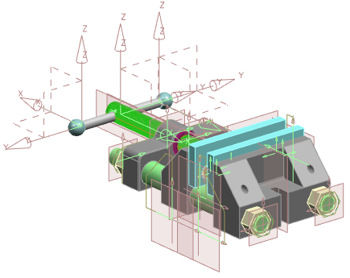
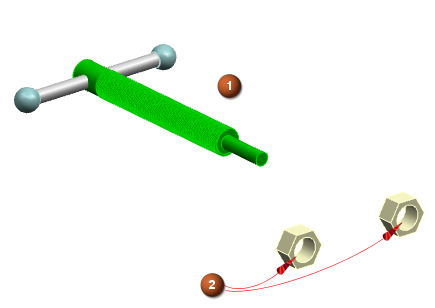
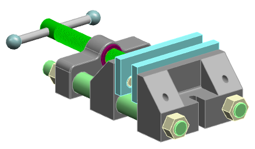
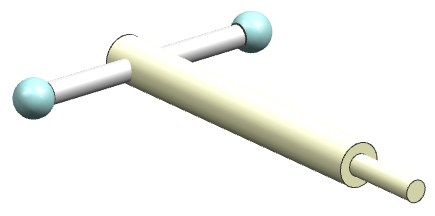

显示所有装配级的引用集
本示例将展示子装配引用集如何使用应用于所有装配级选项来为装配提供不同的显示选项。
在下图中，显示简单夹钳装配在保存时的情况，并为每个组件显示了整个部件条件。

该装配包含四个子装配和一些零件。
在示例开始时，子装配不包含任何定义的引用集。
|
 |
|
|
|

|
|
手柄 |
|
|
零件 |
|
|
活动颚板，包含手柄 |
|
|
固定颚板 |
|
|
引导线 |
-
打开装配时，会为包含该引导线的每个部件显示模型引用集，并为其他部件显示整个部件显示条件。
-
选择文件→打开。
-
在打开对话框中，单击选项。
-
在装配加载选项对话框的引用集组中，将列表布置为使用模型处于顶部，整个部件次之。
-
单击确定。
-
在打开对话框中，选择夹钳装配部件并单击确定。
装配打开后，将显示每个模型引用集。

-
-
在手柄子装配中定义一个模型引用集，并在该引用集中使用简化体来替换螺钉中的详细螺纹。
螺钉组件的模型引用集包含详细螺纹特征。

可能是因为组件中的小细节过多，重新生成显示的时间才会受到影响。
该螺钉部件包含三个引用集，如下图所示。


模型

简化的

符号
可以通过构造所需的几何体，在任何部件中创建相似的引用集。
-
如果将手柄子装配作为显示的部件，则显示所有组件的模型引用集。
-
将螺钉的引用集更改为其简化引用集。

-
根据需要在手柄子装配中创建模型引用集。
-
编辑模型，将所有组件按照其当前条件包含在内。
在向装配中的引用集添加组件时，装配级引用集将记录所显示组件的引用集。
如果已选择组件，请取消选择所有组件，然后通过其当前显示的引用集再次选择它们。
-
在引用集对话框的列表中，选择模型，然后单击信息。
对于模型引用集，“信息”窗口应显示除螺钉以外的所有组件及其模型引用集。螺钉将显示其简化引用集。
如果组件未显示所述的引用集，请从引用集中移除错误显示的组件，并显示希望用于这些组件的引用集，然后再次将组件添加到引用集。
-
保存手柄子装配，并关闭所有部件。
-
-
打开夹钳装配以显示在手柄子装配中创建的模型引用集，其中包含螺钉的简化显示。
可以使用与最初打开装配相同的步骤，但本次必须在装配加载选项对话框中清除应用于所有装配级复选框。
装配将显示除螺钉以外的所有组件的模型引用集。

以下原因会导致此情况发生：
-
手柄子装配具有的模型引用集包含螺钉的简化引用集和其他零件的模型引用集。
-
由于清除了应用于所有装配级复选框，因此对引用集的搜索将在手柄子装配处结束。手柄子装配打开后，可以显示定义的模型引用集。
-
其他子装配不包含模型引用集，因此在加载它们时会显示其整个部件引用集。整个部件只是显示条件，并非真正的引用集，因此将继续在子装配零件中搜索模型引用集。
此时，要在保存装配时将其打开，并显示所有零件的模型引用集，请选中应用于所有装配级复选框。虽然已找到子装配的模型引用集，但仍将对各零件进行检查，而且，如果零件具有模型引用集，则会显示该模型引用集。
-
-
定义手柄子装配中的图纸引用集。
包含详细螺纹的模型引用集对于大多数图纸要求而言过于复杂，且简化引用集不会显示这些螺纹。
图纸引用集通常包含简化的几何体、特殊符号、轮廓线或清晰渲染图纸并实现快速视图显示与更新的其他任何几何体。
-
如果将手柄子装配作为显示的部件，则显示除螺钉以外的所有组件的模型引用集。
-
对于螺钉，显示简化引用集。
-
定义图纸引用集，并为所有组件添加当前显示的引用集。
-
保存子装配，并关闭所有部件。
-
-
打开装配，其图纸引用集位于层次结构列表的顶部。
-
在装配加载选项对话框的引用集组中，将列表布置为图纸位于顶部，使用模型次之，整个部件位于第三。
-
根据需要清除应用于所有装配级复选框。
装配将再次显示除螺钉以外的所有组件的模型引用集。螺钉随其符号引用集一起显示。

以下原因会导致此情况发生：
-
手柄子装配具有图纸引用集，该引用集包含螺钉的符号引用集和其他零件的模型引用集。
-
由于清除了应用于所有装配级复选框，因此对引用集的搜索将在手柄子装配处结束。手柄子装配打开后，可以显示定义的图纸引用集。
-
其他子装配不包含任何引用集，因此在加载它们时会显示其整个部件引用集。整个部件只是显示条件，并非真正的引用集，因此将继续在子装配零件中搜索引用集。
-
没有任何零件包含图纸引用集，但这些零件均包含模型引用集。
-